Step Five
October 13, 2026
Looking Back
Looking back at my original pages, what surprises me most is how little structure I had created for myself to build on. At the time, I felt limited by the HTML tags I knew how to use. I was mostly focused on getting things to appear where I wanted them, without thinking much about how everything was organized. Now I understand that I can reuse the same HTML elements and use classes or ids to style them differently.
As I added more assignments to my Interactive Sketchbook, I started realizing that my original approach wasn't going to work as the website continued growing. So I began redoing my HTML hierarchy structure so I could work with the layout with more unified groups.
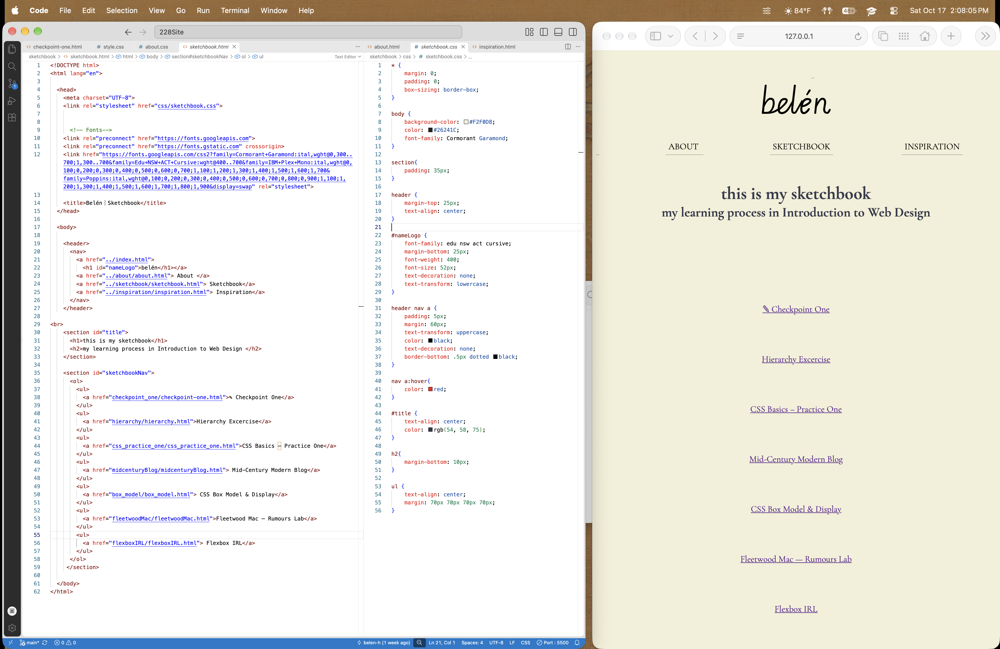
My original Sketchbook navigation before reorganizing the HTML and introducing shared styling.
Understanding Structure Before Styling
My biggest turning point was understanding parent-child relationships through Flexbox. Before applying display: flex, I had to figure out how to group my HTML elements and identify which elements would become flex containers and flex items.
I started by revisiting my Inspiration page, reorganizing its HTML and experimenting with Flexbox to create a three-column layout. I then moved on to my About page, where I applied the same concepts to position my video and biography side by side.
Working through these two pages made me reazlie how important the HTML strucutre was. I had previously relied on br tags for spacing and hadn't given much thought to how elements were grouped. Once I started organizing my code in clearer sections, I found it much easier to understand what I was styling and how I wanted it to look across the website.
Through that I began understanding how classes and id's could help me target specific elements without affecting everything else.
i <3 classes and id's!!!
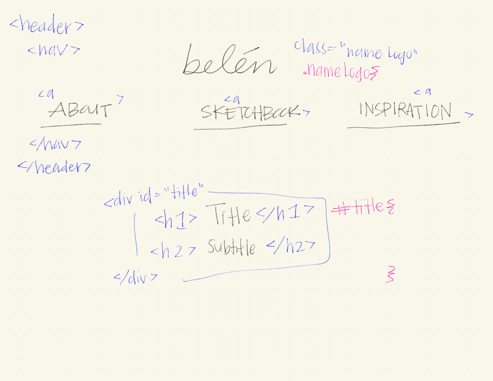
Planning my HTML structure on paper helped me understand how to group elements and use classes and IDs before writing the code.
Creating a System That Can Grow
After reorganizing my Inspiration and About pages, I finally felt ready to create baseStyle.css and baseSketchbook.css.
At the beginning of this revision process, I actually struggled with the idea of using a shared stylesheet. Looking back, I realize that my HTML wasn't organized well enough for me to recognize which styles could be shared across pages.
Once I fixed the structure, everything started making more sense. I could move repeated styling into the base stylesheet and remove unnecessary CSS from individual pages. I was surprised by how little styling each page needed once the navigation, typography, and other shared elements were already taken care of.
One of my favorite moments was connecting the shared stylesheet to my Sketchbook page and watching the navigation transform automatically. After spending so much time updating each page individually, seeing those changes happen through one stylesheet was exciting!
I also decided to create a seperate breadcrumb navigation for the exercises within my Sketchbook. I wanted visitors to understand where they were and have a clear way to return to the larger website without changing the original design of each exercise. I also created shared styling for the process reflections because I realized they were just as important to the Sketchbook as the exercises themselves. Seeing how much these changes improved my earlier pages made me appreciate having a shared stylesheet even more. While I was connecting them I had to go through each page and make the CSS incredibly detailed to override the many different assignments style sheet. I also found that it was best to add the master stylesheet below the page's CSS because of the cascading order that css is read. However, there were some pages that I could not for the life of me get to override some commands.
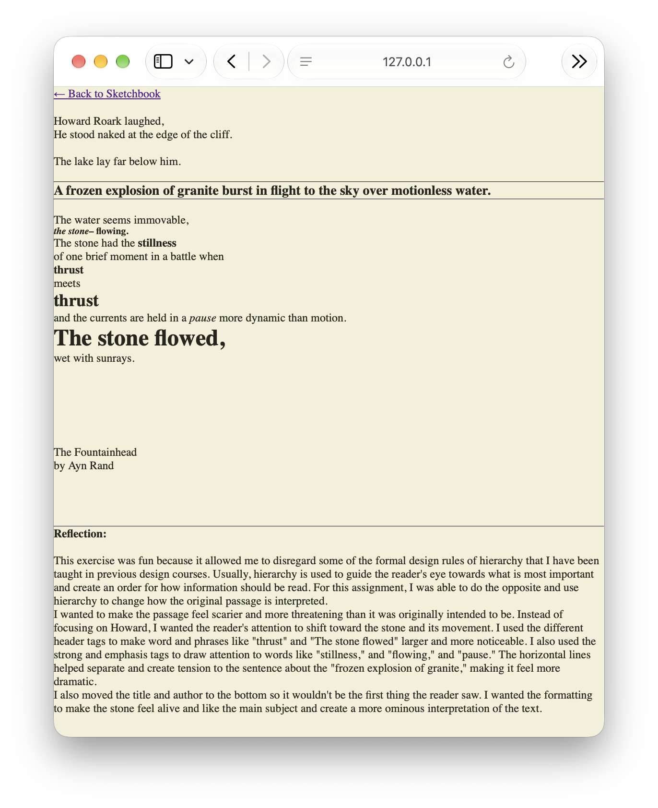
Before: The Hierarchy Exercise had a basic return link and an unstyled reflection that was difficult to read.
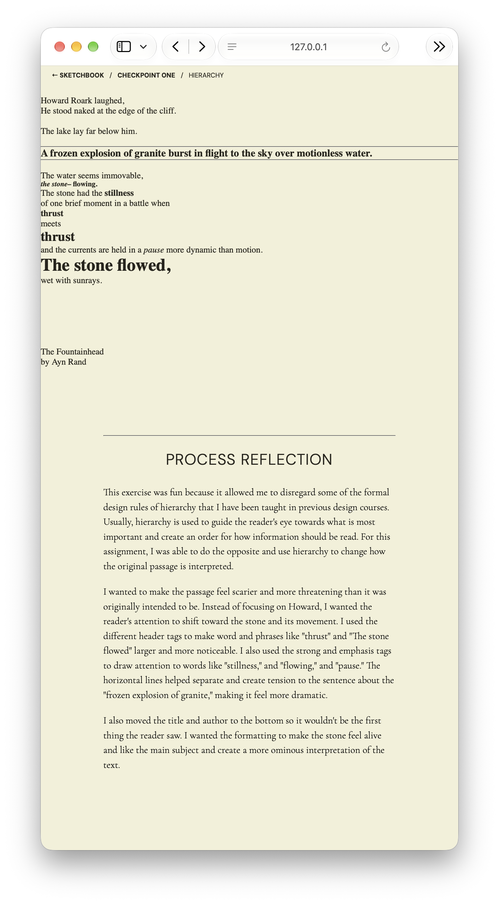
After: Applying my shared Sketchbook stylesheet created consistent breadcrumb navigation and a more readable reflection while preserving the original exercise.
Where I Am Now
I'm most satisfied with finally getting my Flexbox layouts to work how I envisioned them and having a more organized system for my website. I feel much more confident making changes because I understand how the HTML and CSS work together.
I've also started thinking differently about my process reflections. Inintially, I treated them as something separate from the wesbite's design because they were mainly for documenting my work. Now I realize that they're an important part of the Interactive Sketchbok itself, so I wanted to give them the same attention as the rest of the website.
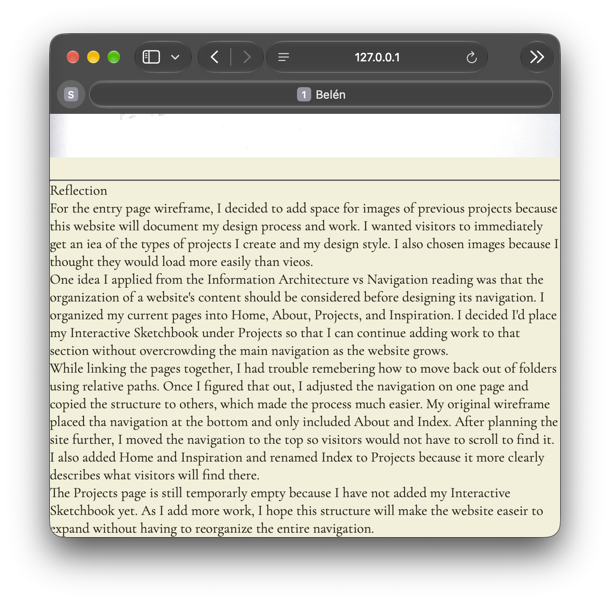
Before: My original reflections were mostly unstyled text. I hadn't considered how their layout and readability contributed to the overall design of my Interactive Sketchbook.
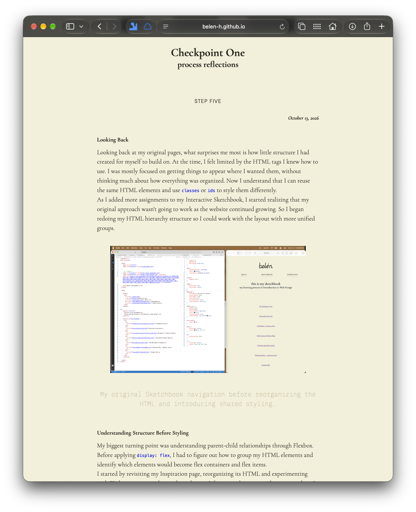
After: I applied shared styling to my process reflections, using consistent typography, spacing, and image captions to make them easier to read and more connected to the rest of my website.
I'm still experimenting with the visual style of my Sketchbook, but for now I like the simplicity of the notebook inspired design. I wanted the website to feel like a collection of my notes, experiments, and inspiration, similar to a physical sketchbook. The cream background and typography help create that feeling while keeping the design simple.
Another design deicision came from my entry page. Originally, I had light colored navigation links over the photograph of my desk, but I realized they were difficult to read against certain parts of the image. I experimented with different styles before deiciding to make the navigation resemble the labels from an old school label maker I use often. I liked how the black background and light letterinf improved the readibility while adding something person to the design. I eventually carried that style across the main pages to make them feel more connected while allowing the individual excercises to keep their own apearance.
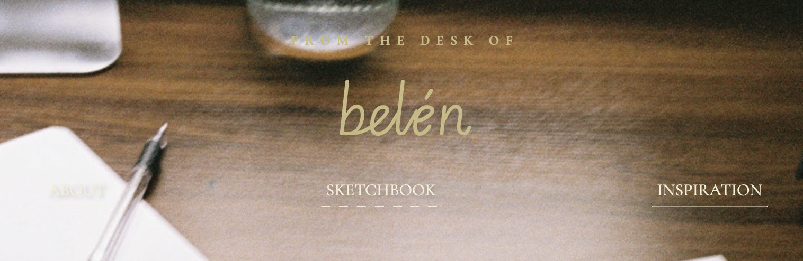
Before: My original navigation was difficult to read against certain parts of the background photograph.
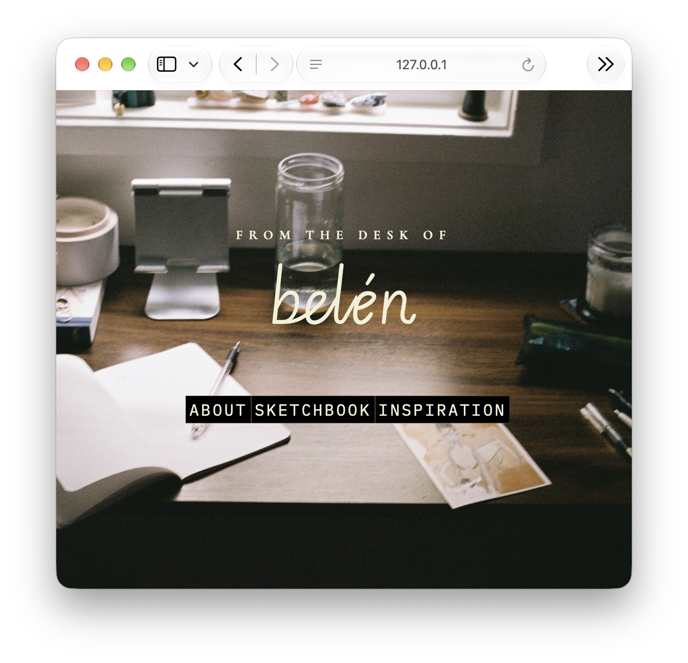
After: I redesigned the navigation to resemble my old-school label maker, improving readability and creating a style I could reuse throughout the website.
The biggest difference is that I no longer feel like every new page requires starting over. I now have a foundation that I can continue building on, revising, and experimenting with as I learn more.
Step Four
September 30, 2026
When I first published my site to GitHub Pages, I was excited that it worked on the first try. Everything appeared online just as it did when I was working locally in Visual Studio Code. The problems started later when I made changes to my site and tried to publish the updated version. Even though I was saving my work, the live website stayed exactly the same as my initial upload. I kept seeing failed deployment notices without understanding what I had changed or why it suddenly stopped working. It was extremely confusing and honestly made me feel a little defeated.
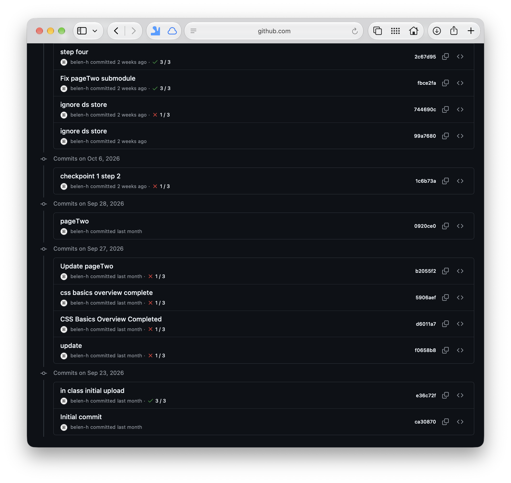
My GitHub commit history showing the failed deployment attempts I encountered while updating my website. After troubleshooting, I discovered that I had accidentally created a nested Git repository, which prevented my changes from publishing correctly.
After looking further into GitHub and the failed deployment messages, I discovered that at some point I had accidentally made my pageTwo folder its own Git repository. GitHub then treated that folder as a submodule and could not find the information it needed when trying to build my site. I found the hidden git folder inside pageTwo, removed it, and then had to change how the main repository recognized that folder so it became a normal part of my website again.
After fixing it, I finally got a green check on the GitHub Pages deployment and my updated site appeared with everything working again. Through this hiccup, I learned that saving in Visual Studio Code, committing changes, pushing them to GitHub, and deploying the live website are separate steps. I also understand my file structure much better now because one folder being set up incorrectly was enough to prevent the entire site from updating.
Step Three
September 29, 2026
Looking back at my original Point of Entry wireframe, I realized that I no longer liked the layout of my wireframes. However, the information architecture has stayed mostly the same even as I have added more pages to my Sketchbook. Originally, I imagined having several images scattered around the page, with the title and subtitle toward the left and the navigation at the bottom or top right. That no longer made sense for how I wanted someone to enter the site.
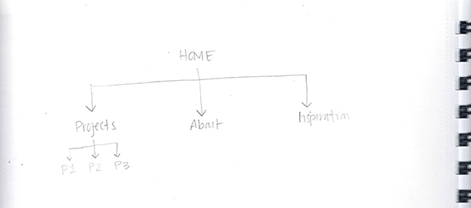
Original Information Architecture brainstorm
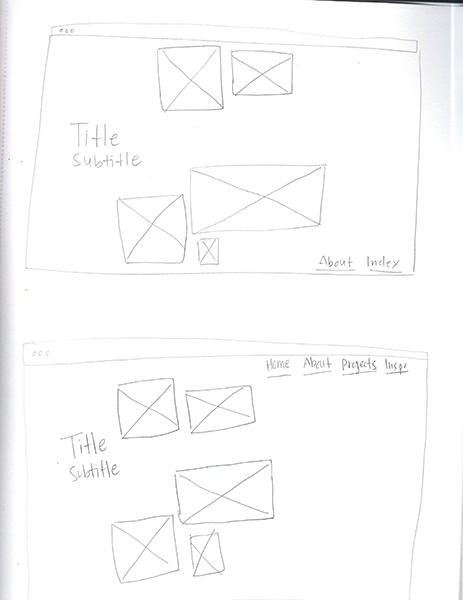
Original entry page wireframes
For my new wireframe, I simplified the idea to one main visual in the background with my name and navigation centered over it. There were many images I tested out. First, a picture of my dorm, then various images I've taken. I ended up using a photograph of my own desk as the background. I like that it introduces the idea of the website as a personal desk containing the types of things I am creating and collecting, such as a journal, sketchbook, notes, and inspiration. I also added “from the desk of” above my name to make that idea clearer.
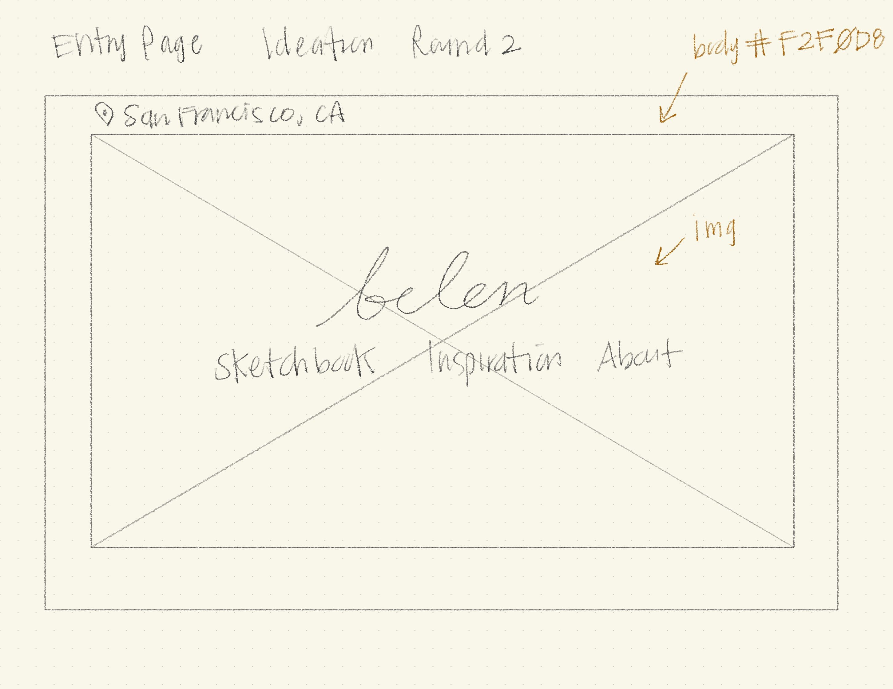
Second version of entry page wireframe
While building the page, I learned how to use the CSS background shorthand to position and size the image. I also experimented a lot with margin and padding to position the navigation. One thing that helped was temporarily putting borders around elements so I could actually see their boxes while adjusting the spacing.
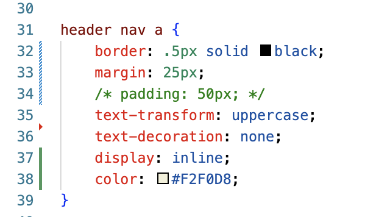
Commented out padding
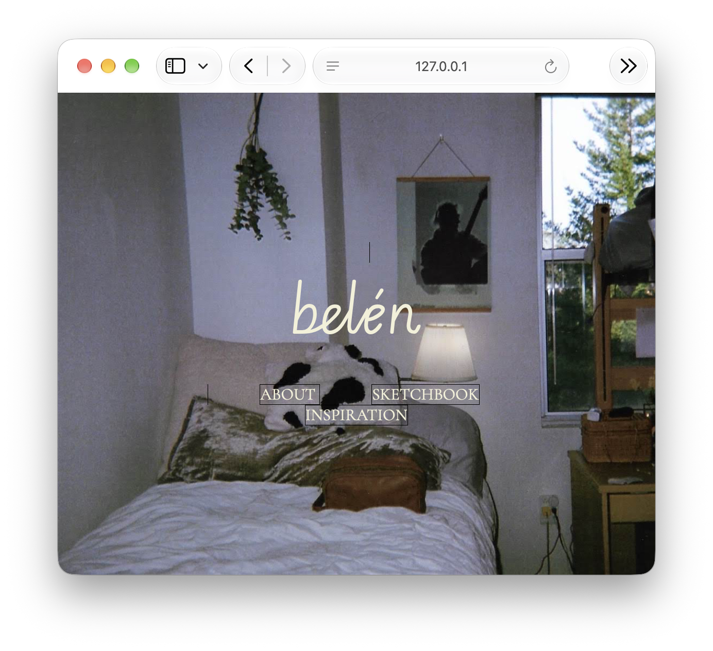
Results of commenting out padding
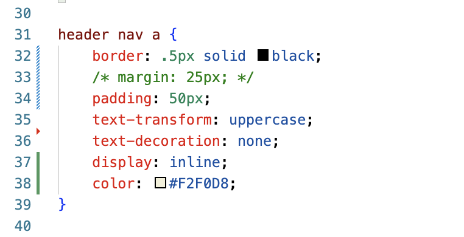
Commented out margin
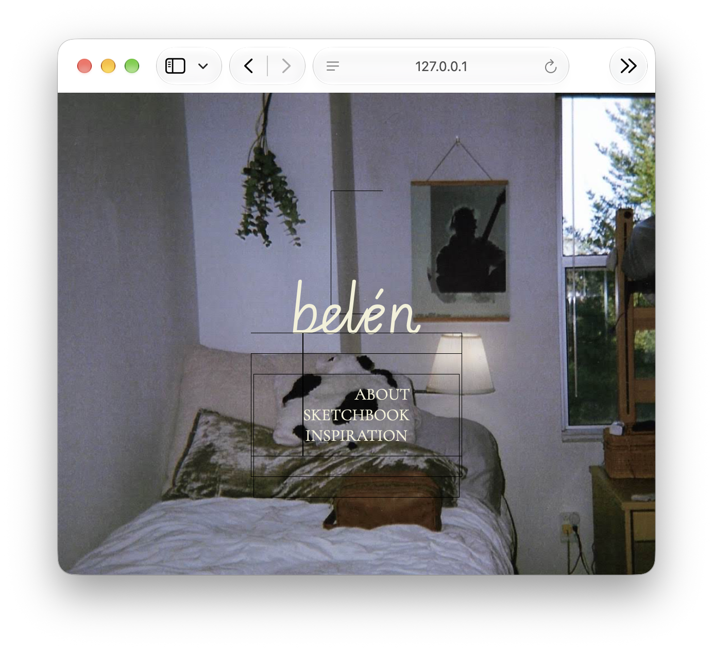
Results of commenting out margin
I also realized that because the photograph is a CSS background rather than an HTML image, I cannot give it alt text. This made me realize that the background image can help set the mood of the page, while the text should communicate the information visitors need.
For now, I really like how simple the Point of Entry feels. As the Sketchbook grows, I want to see whether this desk idea can continue into the other pages.
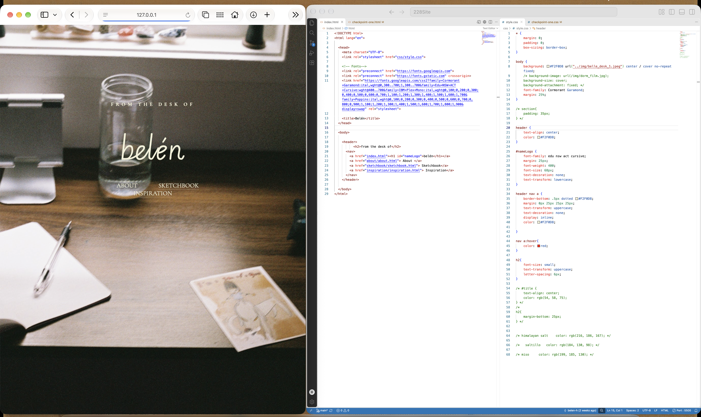
Final Results for version 2
Step Two
September 23, 2026
This week I focused on making the navigation consistent across the main pages of my Interactive Sketchbook. I used the same typography, spacing, colors, and hover effect on each page. Once I applied it everywhere, the pages started to feel more connected and like they actually belonged to the same website. I also enjoyed looking at how other websites keep their navigation consistent and using some of those ideas to influence my own choices.
One of my biggest “aha” moments was finally understanding the difference between padding and margin. At first, I was using them pretty randomly to get the spacing I wanted. I originally gave my navigation links around 80px of padding, but then I noticed that the hover effect would activate when my cursor was still really far away from the actual text. Once I realized padding adds space inside the element and margin adds space outside of it, everything made much more sense. I lowered the padding and used margin to create the larger spaces between my links instead.
I also decided that not every page needs the exact same navigation. In the Sketchbook page there is this page, the Checkpoint One page. Here I decided to keep the full navigation. However, for the other page under Sketchbook, the deeper CSS Practice page can have a simpler link back to its parent page.
There are still a few things I want to figure out. I would like to put my name, or maybe eventually a logo, on the same line as the navigation instead of above it. I also want the navigation to react when the browser gets smaller and eventually turn into a hamburger menu. I don't know how to do that yet, but it gives me something to work toward as I learn more CSS.
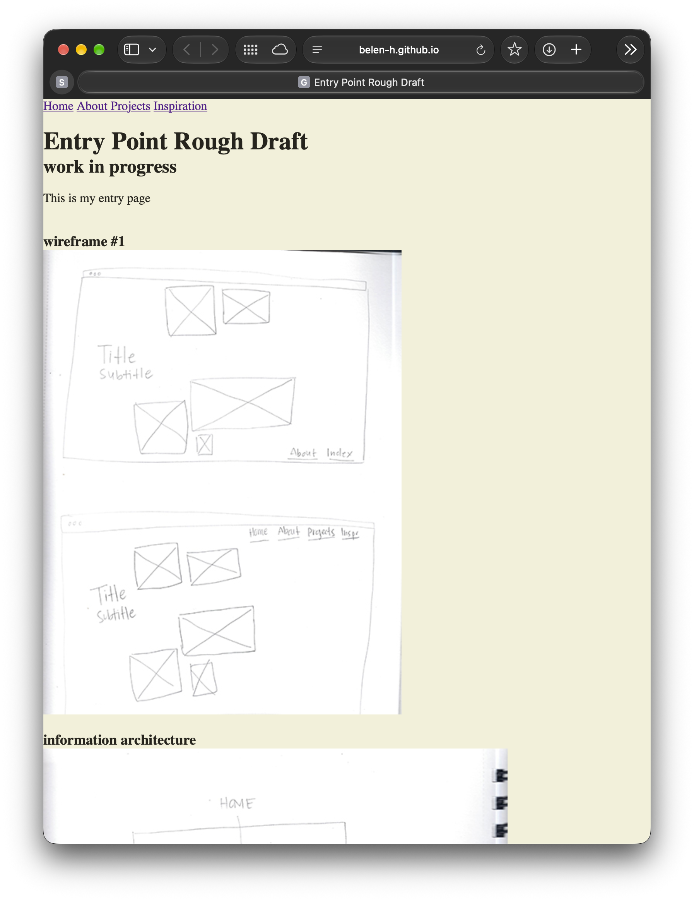
Starting Point
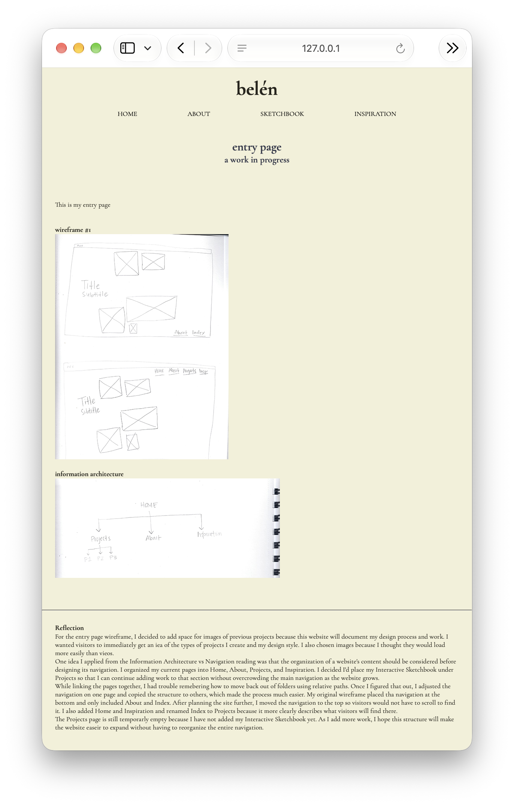
Final Results for version 1
Step One
September 16, 2026
For the entry page wireframe, I decided to add space for images of previous projects because this website will document my design process and work. I wanted visitors to immediately get an iea of the types of projects I create and my design style. I also chosen images because I thought they would load more easily than videos.
wireframe #1
One idea I applied from the Information Architecture vs Navigation reading was that the organization of a website's content should be considered before designing its navigation. I organized my current pages into Home, About, Projects, and Inspiration. I decided I'd place my Interactive Sketchbook under Projects so that I can continue adding work to that section without overcrowding the main navigation as the website grows.
information architecture
While linking the pages together, I had trouble remembering how to move back out of folders using relative paths. Once I figured that out, I adjusted the navigation on one page and copied the structure to others, which made the process much easier. My original wireframe placed the navigation at the bottom and only included About and Index. After planning the site further, I moved the navigation to the top so visitors would not have to scroll to find it. I also added Home and Inspiration and renamed Index to Projects because it more clearly describes what visitors will find there. The Projects page is still temporarly empty because I have not added my Interactive Sketchbook yet. As I add more work, I hope this structure will make the website easier to expand without having to reorganize the entire navigation.
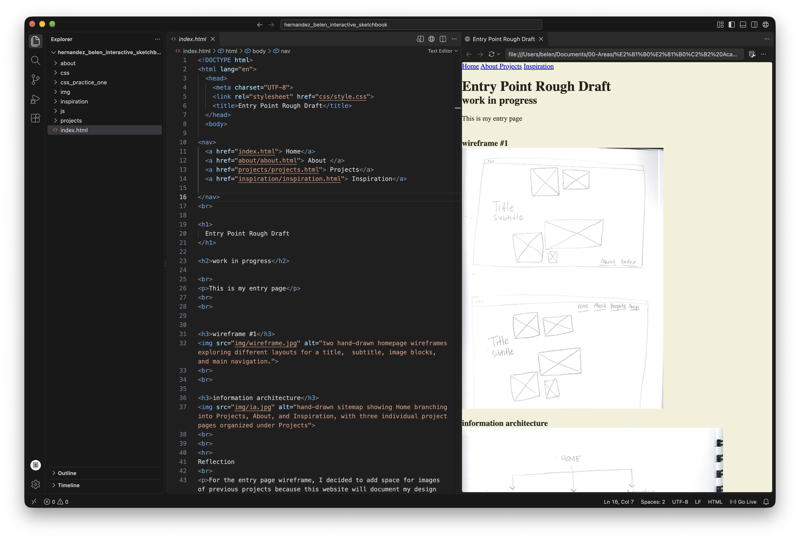
my sketchbook